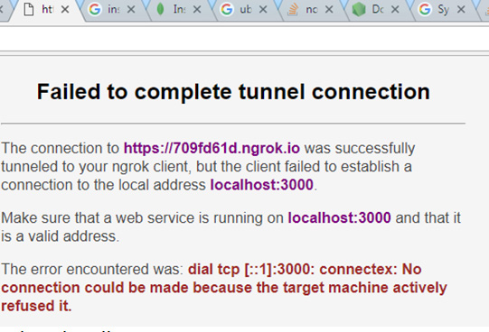

Updated: 06/05/2018 - v.0.4
Projects | Knowledge | Interests/About me | Contacts
Hi! My name is Iurii Dziuban and I'm a starting (as of May 2018) developer (learning for 7 months [~480 hours net] so far).
My projects can be found in the section 'Projects'.
I keep a list of courses taken/tutorials covered by me in the section 'Knowledge'.
More details about me and my previous professional biography can be found in 'Interests/About me'.
I came to coding from biology and worked as a medical translator.
Keywords for my current knowledge: python, flask, REST API (Telegram, Nutritionix, ria.ua, Google Vision, Google Maps, Dialogflow, Twitter), chatbots (Dialogflow, Telegram, FB Messenger)
Projects
Here are the projects that I’ve done (the most recent go first):
March 2018 - now: 'Fellowtraveler-website': github / Demoα | 'Fellowtraveler-Telegram chatbot': github / Demoα
Let it be my little secret so far ;) This is supposed to be an entertainment project/social experiment, which will be built using Flask, MongoDB and APIs for GoogleMaps, several social networks, Dialogflow and messengers (Telegram, FB).
Update - 06 May 2018: project is still in development (7 weeks so far, ~80 hours net). Website part and telegram chatbot are almost ready. Added some screenshots ;).


February-March 2018: 'SharedExpensesBot' Telegram
The idea for this training miniproject was suggested by my brother who said that it would be nice to have a chatbot that could help to track shared expenses during travels with friends.
For example, when one pays for apartment, someone else for dinner, the 3rd one for gas, another food/drinks/tickets etc (as an alternative to chipping in with equal sums each time). More detailed information - see github or Dialogflow's forum.
Topics learnt/covered in this project: plain python, MongoDB, dialogflow and telegram/facebook integrations.


February 2018: 'PlotBot' Telegram Web Demo
Learning to build chatbots on dialogflow.com platform I decided to create a PlotBot - a chatbot which builds charts (using pygal python library for charting).
Try this chatbot in Telegram, Facebook Messenger (waiting for approval) or in a web demo bottom right (click here to open a bigger window). See more detailed information about this chatbot on github or Dialogflow's forum.
Topics learnt/covered in this project: dialogflow, Heroku, pygal, dialogflow and telegram/facebook integration.


January-February 2018: 'Food Composition' Demo
My 2nd real miniproject. Done in Jan 2018. A Flask app that tries to determine approximate percentage of fats, carbohydrates and proteins in food by image.
Made for fun. Still thinking how to filter non-food images ;) Uses Google Vision API and Nutritionix API.
Additionally created a simple chatbot (see it below on the right) on dialogflow.com platform that can tell fats/carbohydrates/proteins % content for the food user enters (you can also find this chatbot for example in telegram).
Topics learnt/covered in this project: Flask, REST API (Google Cloud Vision API, Nutritionix API), bootstrap, plot.ly, deployment to server, dialogflow, Heroku.

November-December 2017: 'Car-price-age-mileage' Demo
My 1st real miniproject. Started on 01.11.2017 after learning Python/coding for ~175 hours (3-3.5months) in total, done in ~70 hours.
A Flask app that allows user to choose a car model and get scatter charts showing how this car's price is changing depending on its age and mileage.
Data is requested from auto.ria.com (the biggest Ukrainian advertisement board for vehicles) using their API.
Charts (for age & price, price & mileage and age & mileage) are drawn using 2 charting engines/libraries - pygal and plot.ly.
About 50% of time working on this miniproject was spent learning how to create a user management system in Flask (register, login, profile update, password update, password reset, avatar functions).
App has a preferences page (accessible for registered and logged in users) where a user can change 2 parameters: adverticements quantity for the model being analyzed (5-50) and the charting engine.
Topics learnt/covered in this project: Flask (including creation of user management system), vagrant, git, virtualenv, REST API, requests, JSON parsing, charting (pygal, plot.ly), MongoDB, bootstrap, deployment to server.


Knowledge
Here I will be posting links to courses/materials/software and other resources that I’ve covered/worked with (last links go first).
How to Get to 1 Million Users for your Chatbot // chatbot, articles
This is how Chatbots will Kill 99% of Apps // chatbot, articles
10 Tips on Creating an Addictive ChatBot // chatbot, articles
How Businesses are Winning with Chatbots & Ai // chatbot, articles
Google Static Maps API // google maps, static maps api
Do You Want Your Chatbot to Converse in Foreign Languages? My Learnings from Bot Devs // chatbot, i18l, l10n
How to Use ngrok to Test a Local Site // ngrok
Google Maps Distance Matrix API // google maps, distance matrix api
Setting your Telegram Bot WebHook the easy way // telegram, chatbot, webhook
How To Share Localhost To World Using Ngrok // ngrok, deployment
Урок 4. Вебхуки // telegram, chatbot, webhook
Запускаем несколько ботов на одной машине: nginx + CherryPy // chatbot, deployment, nginx
Урок 11. Ведём (более-менее) осмысленные диалоги. Конечные автоматы // telegram, chatbot
Конечный автомат: теория и реализация // chatbot, telegram
Creating a Chatbot with Deep Learning, Python, and TensorFlow p.1-3 // chatbot, deep learning
TelegramBot Analytics - botan.io // telegram, chatbot, analytics
Пишем бота для Telegram на языке Python // telegram, chatbot
Создаём своего первого робота в Telegram при помощи Python 3 // telegram, chatbot
Делаем робота в Telegram: клавиатуры и возможности Inline-режима // telegram, chatbot
7 Live Chat Solutions for Small Businesses // live chat
Telegram бот для службы поддержки (pyTelegramBotAPI) // telegram, chatbot, pyTelegramBotAPI
Embedding Telegram on website to use as Live Chat // telegram, chatbot, web-chat
Request and handle phone number and location with Telegram Bot API // telegram, chatbot
pyTelegramBotAPI // telegram, chatbot, pyTelegramBotAPI
Building Telegram bot Using pyTelegramBotAPI and Flask // telegram, chatbot, python, pyTelegramBotAPI
how-to-create-a-telegram-bot-from-scratch-tutorial (pyTelegramBotAPI) // telegram, chatbot, pytelegrambotapi
different-programming-languages-and-their-fields-of-application // general, articles
Dialogflow API python wrapper (apiai) // dialogflow, nlp, apiai
python-telegram-bot // telegram, chatbot, python-telegram-bot
how-to-create-a-telegram-bot-with-ai-in-30-lines-of-code-in-python (python-telegram-bot) // telegram, chatbot, python-telegram-bot
Dealing with 413 error 'File too big' - nginx on ubuntu, flask // nginx, 413
Nginx: 413 – Request Entity Too Large Error and Solution // nginx, 413
Logging, Flask, and Gunicorn … the Manageable Way // flask, gunicorn, logging
AJAX with jQuery // jquery, ajax
Python Flask jQuery Ajax POST // flask, jquery, ajax
Encoding and Decoding Strings (in Python 3.x) // unicode, encoding
Processing Text Files in Python 3 // unicode, encoding
Unicode HOWTO // unicode, encoding
How to clone git repo into current directory // deployment, git
Getting free SSL certificate - Letsencrypt // ssl, deployment
How to redirect www to non-www - GoogleCloud // deployment, dns
IP address to domain redirection problem in NGINX // deployment, dns
How To Redirect www to Non-www with Apache on Ubuntu 14.04 // deployment, dns
Custom Dialogflow Chatbot using BotUI // chatbot, web chat, botui
Dialogflow V1 API Reference // dialogflow, api
Flask-Babel // flask, flask-babel, l10n, i18n
Top languages to localize your iPhone app and get revenue // l10n, i18n
Localization for Flask Applications // flask, localization, l10n, i18n, internationalization
The Flask Mega-Tutorial, Part XIV: I18n and L10n // flask, localization, l10n, i18n, internationalization
python-twitter: A Python wrapper around the Twitter API // python, twitter
Flask-Session // flask-session, sessions, flask
My Chatbot [web chat for Wordpress] // dialogflow, web chat
Chatbot with Angular 5 & DialogFlow // dialogflow, web chat
Basic html web chat for api.ai dialogflow // dialogflow, web chat
Python Flask jQuery Ajax POST // flask, python, jquery
StoryMap JS // storymap, js, maps, journalism
Place Autocomplete Address Form // google maps, autocomplete
Place Autocomplete // google maps, autocomplete, js
How do you get a query string on Flask? // flask, queries
Flask-JSGlue // flask, JSGlue, js
jQuery posting JSON // python, jquery, js
Send Google Maps marker position to Flask whe dragged // flask, google maps, js
Flask Google Maps (plus: how to write a Flask extension) // flask, google maps
How to get the filename without the extension from a path in Python? // python, file extension
Capturing an Image from the User // image upload, input
Passlib 1.7.1 documentation // flask, passlib
Flask-GoogleMaps 0.2.5 // flask, google maps
reCaptcha setup // reCaptcha
Creating Forms // flask, wtf
CSRF Protection // flask, csrf
How to embed a [Twitter] timeline // twitter
Flask extensions registry // flask, extensions
Share your projects - PlotBot // chatbots, dialogflow
How To Serve Flask Applications with Gunicorn and Nginx on Ubuntu 14.04 // deployment, nginx, unicorn, ubuntu
[Ask Flask] How to deploy multiple apps on a single server using nginx and gunicorn // deployment, nginx, unicorn
Multiple websites on nginx, one IP // deployment, nginx
How To Set Up Nginx Server Blocks (Virtual Hosts) on Ubuntu 14.04 LTS // deployment, ubuntu, nginx
Installing MongoDB and pymongo on Ubuntu 14.04// mongodb, deployment, ubuntu
Operators — MongoDB Manual 3.6 // mongodb
8. Errors and Exceptions // python
Using (and abusing) MongoDB ObjectIds as created-on Timestamps// mongodb
Timestamp and ObjectId in mongoDB // mongodb
Storing data with php - flat file or database? // python, db
Chatbot Developers in Ukraine // chatbot, career
Building a Chatbot using Telegram and Python (Parts 1, 2) // chatbot, python, telegram
Integrating Api.ai Recipe Bot with Telegram// chatbot, dialogflow
Telegram Bot API // chatbot, telegram
The UX of AI // AI, articles
Wildcard for entities // chatbot, entities
Material Design for Bootstrap 4 // mdbootstrap
Optimal context lifespan in DialogFlow (API.AI) // chatbot, dialogflow
Step by step guide to DialogFlow (API.AI) // chatbot, dialogflow
Glitch - like Heroku for webhooks but with code editing // glitch, webhook, chatbot
FB Messenger Platform (general info) // chatbot, facebook messenger
Dialogflow: Python Client // chatbot, dialogflow, python
How to create Webhooks for Dialogflow (Api.ai) // chatbot, dialogflow
DialogFlow (formerly API.AI) webhooks under the hood // chatbot, dialogflow, webhook
Deploying app to Heroku with git // heroku, deployment
Getting images from user in a Chatbot (dialogflow) // chatbot, dialogflow
Making of simple AI Chat Bot using webhook | Python | dialogflow.com | API.AI | ngrok // chatbot, ngrok, webhook
Detecting Intent from Audio // chatbot, speech to text
Conversational datasets to train a chatbot // chatbot
AI Chatbot: NLP and ML Platforms Comparison for Creating Best AI // chatbot, AI
Google Dialogflow - Basics // chatbot, dialogflow
Paralleldots - text analysis APIs // machine learning, text analysis, Paralleldots
My Journey Into Data Science and Bio-Informatics — Part 1: Programming // bioinformatics, python
Improving Airbnb Yield Prediction with Text Mining // text mining, machine learning, airbnb
Problems with installing uwsgi - how to solve // deployment, uwsgi
How To Serve Flask Applications with uWSGI and Nginx on Ubuntu 14.04 // flask, ubuntu, deployment, nginx
Protected directories and Files - Flask Web Development with Python 31 // flask, protected files, sentdex
Return Files with send_file - Flask Web Development with Python 30 // flask, sentdex
Flask Mail - Flask Web Development with Python 29 // flask, flask-mail, sentdex
URL Converters - Flask Web Development with Python 28 // flask, sentdex
Jinja Templating Cont'd - Flask Web Development with Python 27 // flask, Jinja, sentdex
Includes - Flask Web Development with Python 26 // flask, includes, sentdex
Flask Tutorial Web Development with Python 24 - Crontab / Cron jobs // flask, sentdex, cron
Learn X in Y minutes // python
Uploading and validating an image from an URL with Django // python, image validation
Style Guide for Python Code // python, pep-0008
Textbox - sentiment analysis of text // machine learning, API
I trained fake news detection AI with >95% accuracy, and almost went crazy // machine learning, articles
Deployment to virtual machine with Ubuntu // deployment, vm, ubuntu
Google Knowledge graph API (general info) // google knowledge graph, api
Nutritionix API // API, nutrionix
Setting up API and Vision Intro - Google Cloud Python Tutorials p.2 (sentdex) // google cloud, vision API, sentdex
Google Cloud Vision API // google cloud, vision API
Writing Great Python Code // python, standarts
Practical Flask Web Development Tutorials by sentdex // flask, sentdex
Plotly DASH // plotly, DASH
Plot.ly // plotly
Nutritionix API // API, nutrionix
AWS Public Datasets // API
What are some fun API's to play with? // API
How I Secured An Internship With One Amazing Side Project // general, career
Flask-Login // Flask-login, login
Flask Tutorial Web Development with Python 20 - Login Required Decorator Wrapper // Flask, decorators, login
Flask Tutorial Web Development with Python 10 - Message Flashing // Flask, flash
Message Flashing // Flask, flash
Flask Tutorial Web Development with Python - User Registration - 1, 1, 3 // Flask, registration
Step 13 - Working with Forms in Flask // Flask, forms
Flask Tutorial Web Development with Python 19 - user login system // Flask, login
Flask Tutorial Web Development with Python 12 - GET & POST // Flask, Get, Post
Flask Redirects (301, 302 HTTP responses) // Flask, redirects
The Flask Request // Flask, request
HTML <form> // html, form
How to Get Your First Developer Job in 4 Months // general, career
Flask-Quickstart: Sessions // cookies, sessions
Cookies and Sessions // cookies, sessions
What is the difference between Sessions and Cookies? // cookies, sessions
HTTP cookies // cookies, sessions
Using PSCP to transfer files securely // deployment, pscp
Developing and deploying Python apps using pip and virtualenv // deployment, virtualenv, git, pscp
Bootstrap - Introduction // bootstrap, frontend
Miscellaniours articles on Quora, including 1, 2, 3, 4, 5, 6, 7, 8 // general, career
Introduction to working with MongoDB and PyMongo // mongodb, python
Python Driver (PyMongo) // pymongo, mongodb, python
Getting Started with MongoDB (MongoDB Shell Edition)
Mongobooster // mongodb, mongobooster, ide
Install MongoDB Community Edition on Ubuntu (Vagrant) // mongodb, vagrant
Pygal - Sexy python charting // pygal, charting, python
JSON Library // json, parsing
Requests: HTTP for Humans // requests, python
Principles of good RESTful API Design // api
Flask Minimal Application // flask
Virtualenv // virtualenv
PyCharm // pycharm, ide
Git Tutorial – Codeschool // git
“Learn Git” course - codecademy.com // git
What is VCS? (Git-SCM) • Git Basics #1 //git
How Does the Internet Work? // general info, internet
CS75 (Summer 2012) Lecture 0 HTTP Harvard Web Development David Malan // general info, http
How the Web works // general info, internet
How does the Internet work? // general info, internet
How To Set Up SSH Keys // ssh
Understanding SSH Key Pairs // ssh
SSH Key // ssh
DevOps BootCamp: Packages, Software, Libraries // unix, libraries
DevOps BootCamp: Files – UNIX // files, unix
DevOps BootCamp: Users, Groups, Permissions - UNIX / users, unix
“Learn the Command Line” course - codecademy.com // command line
DevOps BootCamp: Shell Navigation // command line, shell, unix
DevOps BootCamp: Operating Systems // general info, os
Vagrant (install, setup, boxes, ssh, networking etc) // vagrant
Virtualbox // virtualbox
Python coding practice - rosalind.info (28 tasks) (account, github) // python, bioinformatics
Python coding practice - codewars.com (10 tasks) (account, github) // python
Python coding practice - practicepython.org (27 tasks) (github) // python
Python coding practice - coderbyte.com (10 tasks) (account, github) // python
Python coding practice - codingbat.com (account) // python
“Learn Python” course - codecademy.com // python
Interests/About me
I’m 34, I was born and live in Ukraine (Cherkasy). I came to coding from biology (have master’s degree in human physiology, unfinished PhD; while studying at school and university was a winner of All-Ukrainian Biological Olympiads). I have >9-years of experience as an English>Russian medical translator [TA Medconsult]), translated for Novartis, Pfizer, Roche, Bristol-Myers Squibb, Sanofi, Regeneron Pharmaceuticals etc.Passed a 2-month internship in a molecular biology lab INSERM U963 / CNRS UPR9022 (Strasbourg, France).
Visual timeline of my education and jobs is as follows:

I would like to be working on problems at the junction of coding and biology, psychology, education but other topics are also welcome.
I’m married, we have 3 kids (born in 2012, 2014 & 2014), trying to keep a healthy balance between work and family/life. Our family/kids blog on Youtube. I like mounting biking – Strava.
Contacts
iurii.dziuban@gmail.comGithub
Updated: 17/05/2018
Task:
Create chatbot using Node.js[0], which allows a user to conduct all his reminders – create[1]/delete[2] and reminders alert[3] with an ability to confirm[4]/snooze[5] the reminder.
Bot should use LUIS or Dialogflow API for NLU[6], and bot application must be the only one on a Facebook Page[7]. You should use LUIS/Dialogflow as an API only (use for defining intents and save context).
Bot should have “Getting started" feature[8] and use a persistent menu[9] for a basic operation like - create a reminder, show all reminders for today etc.
Bot should use structured messages to interact with a user, for example, reminders alert message should be a "Generic template" with accept/snooze buttons[10].
You should use ESlint[11] (Airbnb code style config), npm scripts, database (PostgreSQL or MongoDB[12]), environment variables (Dotenv[13]).
Current Knowledge:
- MongoDB[12] – 3/10: (using pymongo wrapped for Python; 3 miniprojects – 1, 2, 3)
- Dialogflow API[6] – 2/10 (using apiai wrapper for Python; 1 miniproject)
- Chatbots for FB Messenger[7] – 2/10 (via Dialogflow's console + webhooks on Python; 1 miniproject)
Time Limits:
If by Thu., 05/24/2018: ~40 hours (5h/d * 5 weekdays + ~7h/d * 2 days off) because of current job and family ;)
Feeling like

Set up a general plan of work and preliminary dialog flow for the bot
Installed node.js, express (+ request, apiai), WebStorm
Got "Hello world" on JS ;)
Created a FB page and app, got FB credentials
Created Dialogflow's agent
Following manual - https://medium.com/crowdbotics/how-to-create-your-very-own-facebook-messenger-bot-with-dialogflow-and-node-js-in-just-one-day-f5f2f5792be5
Uploaded code to github - https://github.com/IuriiD/remindmebot.git
At the moment messages don't come from FB Messenger to local webhook
9:12
Planning..
1) "Hello world" on JS (Node.js)
2) Write functions:
a. create_reminder(),
b. delete_reminder(N),
c. clear_all_reminders(),
d. show_all_reminders() # for today
e. confirm_reminder(),
f. snooze_reminder() # change time +X min (for eg., 15min)
g. alert_reminder()
3) Create a bot on Dialogflow (DF), get credentials
4) Communication with DF via API, triggering functions
9:30
5) Contexts and dialog flow:
a. INPUT_CONTEXT = []
Greeting (Getting started" feature?): Good day [morning/day/evening],
Buttons:
Display my reminders for today
Add a reminder
Let's talk/Tell me a joke ;) (SmallTalk/etc, optionally)
OUTPUT_CONTEXT = []
b. INPUT_CONTEXT = []
User clicked "Display my reminders for today" - trigger show_all_reminders()
Buttons:
Add a reminder
Delete reminder
Clear all reminders
OUTPUT_CONTEXT = [reminders_shown]
c. INPUT_CONTEXT = [reminders_shown]
User clicked "Delete reminder" – ask user to enter a reminder number (integer value will be expected from DF)
Buttons:
Cancel
Main menu (Display…/Add a reminder/…)
OUTPUT_CONTEXT = [which_reminder_to_delete]
d. INPUT_CONTEXT = [which_reminder_to_delete]
User entered something
Integer number is expected – if not, tell user that's not a number and to ask to repeat + "Cancel" button
In range of reminders quantity – if not, tell user that value entered is incorrect and ask to repeat + "Cancel" button
If Ok – trigger delete_reminder(N), trigger show_all_reminders() (for today)
Buttons:
Add a reminder
Delete reminder
Clear all reminders
OUTPUT_CONTEXT = []
e. INPUT_CONTEXT = []
User clicked "Add a reminder" – ask user smth like "What to remind you about?" sys.any input is expected
Buttons:
Main menu (Display…/Add a reminder/…)
OUTPUT_CONTEXT = [reminder_content_input]
f. INPUT_CONTEXT = [reminder_content_input]
User entered something (anything) – tell smth like "Got it!"
Hold reminder content
On which date/time should I set this reminder? – date + time input is expected from DF
Buttons:
Cancel (go to main menu)
OUTPUT_CONTEXT = [reminder_time_input]
g. INPUT_CONTEXT = [reminder_time_input]
If not correct – "Sorry but that date/time seems to be incorrect. Could you please enter a valid value? Thanks ;)"
Buttons:
Cancel (go to main menu)
OUTPUT_CONTEXT = [reminder_time_input]
h. INPUT_CONTEXT = [reminder_time_input]
If date/time Ok - trigger create_reminder(), save data to DB
Inform user "A new reminder 'XXXX' for
Buttons:
Display my reminders for today
Add a reminder
Let's talk/Tell me a joke ;) (SmallTalk/etc, optionally)
OUTPUT_CONTEXT = []
10:00
Draw a paper scheme of actions
10:30
6) Create a FB page and app, get credentials
Backend – FB Messenger interaction
Reading
How To Create Your Very Own Facebook Messenger Bot with Dialogflow and Node.js In Just One Day
Building a Facebook Messenger Bot Using Node.js, Heroku & API.AI
11:00
Created a FB Page: https://www.facebook.com/Remindmebot-191533734823967
Created a FB Messenger bot – Remindmebot
Generated FB page access token: ####
FB App – Callback ULR - https://709fd61d.ngrok.io
Verify Token – remindmebot
Messages, postbacks
11:30
Trying to install express.js on Ubunty in Vagrant or on Windows
npm install express --save
Getting CERT_UNTRUSTED error on Ubuntu
https://www.digitalocean.com/community/tutorials/how-to-install-node-js-on-ubuntu-16-04
https://expressjs.com/en/starter/installing.html
github - https://github.com/IuriiD/remindmebot.git
Bypassing https helped (https://stackoverflow.com/questions/21855035/ssl-error-cert-untrusted-while-using-npm-command?utm_medium=organic&utm_source=google_rich_qa&utm_campaign=google_rich_qa)
npm config set strict-ssl false
npm install express --save
Reading “Hello World!” app with Node.js and Express
12:00
Failing to get 'Hello world' work
var express = require('express');
var app = express();
app.get('/', function (req, res) {
res.send('Hello World!');
});
app.listen(3000, function () {
console.log('Example app listening on port 3000!');
});
Didn't work in Ubuntu (in Vagrant on Windows) but works from Windows
Getting Cannot GET / error on localhost:3000
Installing WebStorm (worked in PyCharm ;)
12:30
So:
Hello world from manual (https://medium.com/@adnanrahic/hello-world-app-with-node-js-and-express-c1eb7cfa8a30 ) works, including via ngrok (https://709fd61d.ngrok.io/)
Code from manual (https://medium.com/crowdbotics/how-to-create-your-very-own-facebook-messenger-bot-with-dialogflow-and-node-js-in-just-one-day-f5f2f5792be5 ) gives Cannot GET / error (localhost:3000, https://709fd61d.ngrok.io/) >> failing to finish NewPageSubscription on FB
13:00
Article (https://medium.com/crowdbotics/how-to-create-your-very-own-facebook-messenger-bot-with-dialogflow-and-node-js-in-just-one-day-f5f2f5792be5) seems to be a bit incorrect(?)
Following comments, changed
const express = require('express');
const bodyParser = require('body-parser');
const app = express();
app.use(bodyParser.json());
app.use(bodyParser.urlencoded({ extended: true }));
app.listen(3000, () => console.log('Webhook server is listening, port 3000'));
to
const express = require('express');
const bodyParser = require('body-parser');
const app = express();
const verificationController = require('./controllers/verification');
app.use(bodyParser.json());
app.use(bodyParser.urlencoded({ extended: true }));
app.get('/', verificationController);
app.listen(3000, () => console.log('Webhook server is listening, port 3000'));
and NewPageSubscription on FB seems to have succeeded
Creating a bot on Dialogflow…
Remindmebot
Client access token: ###
13:43
npm install apiai —- save
npm install request —- save
Stop for today - back to main job
Spent a lot of time (2+ hours) struggling with software:
- Localhost:3000 in not accessible (failed to fix that; launching server at port 5000);
- It appeared that what I've installed using "apt-get install node" on Ubuntu is not Node.js – reinstalled that (not from the 1st try ;)
- Failed to get ngrok working on Ubuntu (but it works from Windows and that's enough for now)
- Bot recreated according to manual (https://medium.com/crowdbotics/how-to-create-your-very-own-facebook-messenger-bot-with-dialogflow-and-node-js-in-just-one-day-f5f2f5792be5) (run on port 5000, tunneled using ngrok) still doesn't respond to messages from FB Messenger = at the moment my backend doesn't respond to messages from FB
Wrote several functions on JS for working with mongoDB - createReminder(),checkForDuplicates(), deleteReminder()
9:25
Planning
Yesterday I also started an intro course on JS on Codeacademy (https://www.codecademy.com/learn/introduction-to-javascript), current progress = 14% (https://www.codecademy.com/gigaWhiz78105)
Plan for the day. 2 main directions:
A) JS – learn basics and try to write necessary functions (see "2)" from yesterday's plan) and
B) Achieve message exchange between FB Messenger, backend (on localhost using ngrok or on Heroku if local problems) and Dialogflow.
1. JS basics (https://www.codecademy.com/learn/introduction-to-javascript) for 1-1:30
2. Functions – JS/express and MongoDB
3. Back to chatbot and manual (https://medium.com/crowdbotics/how-to-create-your-very-own-facebook-messenger-bot-with-dialogflow-and-node-js-in-just-one-day-f5f2f5792be5), achieve at least successful messages exchange between FB Messenger, localhost (or maybe Heroku if unsuccessful) and Dialogflow
4. If #2 and #3 succeed – deploy functions to dialog flow between FBM and backend
10:00
https://www.codecademy.com/learn/introduction-to-javascript - progress 21%
10:30
https://www.codecademy.com/learn/introduction-to-javascript - progress 28%
11:00
https://www.codecademy.com/learn/introduction-to-javascript - progress 35%
11:30
https://www.codecademy.com/learn/introduction-to-javascript - progress 42%
12:05
https://www.codecademy.com/learn/introduction-to-javascript - progress 50%
12:39
https://www.codecademy.com/learn/introduction-to-javascript - progress 56%
Stopped at lesson #8 "Objects"
12:51
Looked through 2 articles on MongoDB and nodejs:
1) https://closebrace.com/tutorials/2017-03-02/the-dead-simple-step-by-step-guide-for-front-end-developers-to-getting-up-and-running-with-nodejs-express-and-mongodb
2) https://closebrace.com/tutorials/2017-03-02/creating-a-simple-restful-web-app-with-nodejs-express-and-mongodb
Reading:
Node.js MongoDB - https://www.w3schools.com/nodejs/nodejs_mongodb.asp
Installed MongoDB
npm install mongodb (on Ubuntu14.04 in VagrantBox on Windows)
Using Mongobooster
14:30
On Day1 I was using node on Windows but want to continue on Ubuntu (as with all my projects) (14.04; in VagrantBox on Win7).
But on Ubuntu after installing Node with "apt-get install node" command "$ node somefile.js" did nothing in shell. It appeared that node installed was wrong
Solution: https://stackoverflow.com/questions/24721182/when-i-run-node-nothing-happens-the-same-with-forever?utm_medium=organic&utm_source=google_rich_qa&utm_campaign=google_rich_qa
(uninstalled node, downloaded 64-bit binary for Linux from http://nodejs.org/download/, added PATH=$PATH:/vagrant/soft/node/bin)
Another local problem:
Can't reach service on 3000 port BUT can on port 5000 (for eg., in my python apps on Flask) 
telnet localhost 3000
Trying 127.0.0.1...
telnet: Unable to connect to remote host: Connection refused
lsof -i :3000 -n
COMMAND PID USER FD TYPE DEVICE SIZE/OFF NODE NAME
python 7236 root 4u IPv4 34677 0t0 TCP *:3000 (LISTEN)
Windows firewall turned off
Decided to launch chatbot server on port 5000
16:15
Back to MongoDB with JS (https://www.w3schools.com/nodejs/nodejs_mongodb_create_db.asp)
Wrote several functions - createReminder(),checkForDuplicates(),deleteReminder()
25% time spent but moving very slowly :(
- finally sorted out with how to properly install nodejs/npm on Ubuntu
- JS/nodejs and MongoDB - wrote 3 functions (nextAlert(), clearAllReminders(), showAllReminders4Today())
9:02
Plans for the day:
- Deal with software problems (node/npm, node-mongodb)
- Continue with functions on js for working with mongodb
- Another try to get FB M and backend exchange messages
As I'm still having some problems with node/npm (for eg., getting "SyntaxError: Use of const in strict mode." when executing scripts that work with MongoDB; node v 0.10.25) – decided to reinstall Node.
How to Install and Use Node.js and npm (Mac, Windows, Linux)
https://www.taniarascia.com/how-to-install-and-use-node-js-and-npm-mac-and-windows/
On Win7 64bit installed node-v10.1.0-x64.msi
Node 10.1.0
Npm 5.6.0
Seems to be working Ok. But on Win I will also need to install MongoDB. On Ubuntu (in Vagrant) I already have it and also I'm doing all other projects there, so it would be better (and for perspective) to work in Ubuntu. So
Completly uninstall nodejs, npm and node in ubuntu 14.04
https://stackoverflow.com/questions/32426601/completly-uninstall-nodejs-npm-and-node-in-ubuntu-14-04?utm_medium=organic&utm_source=google_rich_qa&utm_campaign=google_rich_qa
Currently it shows node/nodejs v. 0.10.25, npm v.1.3.10
sudo apt-get remove nodejs
sudo apt-get remove npm
sudo apt-get update
And then back to article https://www.taniarascia.com/how-to-install-and-use-node-js-and-npm-mac-and-windows/
Installation using Node Version Manager (NVM)
Now using node v10.1.0 (npm v5.6.0)
10:11
Recreate a project
Later will try to configure node interpreter from Vagrant in WebStorm (https://www.jetbrains.com/help/webstorm/configuring-remote-node-interpreters.html) – so far will use WebStorm only for writing code, execution from shell
"dependencies": {
"apiai": "^4.0.3",
"body-parser": "^1.18.3",
"express": "^4.16.3",
"mongodb": "^3.1.0-beta4",
"request": "^2.86.0"
}
Functions for MongoDB seem to be working Ok
10:40
One more quick try to get this working https://medium.com/crowdbotics/how-to-create-your-very-own-facebook-messenger-bot-with-dialogflow-and-node-js-in-just-one-day-f5f2f5792be5
One more try to get ngrok working on Ubuntu in Vagrant
https://www.npmjs.com/package/ngrok
npm install ngrok and some other variants fail
only this one worked:
https://github.com/inconshreveable/ngrok/issues/429
sudo npm i -g ngrok --unsafe-perm=true --allow-root
https://1627ad0b.ngrok.io
So,
1) I'm following the manual https://medium.com/crowdbotics/how-to-create-your-very-own-facebook-messenger-bot-with-dialogflow-and-node-js-in-just-one-day-f5f2f5792be5
2) My webhook is listening on port 5000, localhost:5000 tunnelled with ngrok to https://1627ad0b.ngrok.io (can be tested in browser)
3) Messages from FB M still don't come :(
11:40
Back to js and mongodb
15:47
Off-topic: https://da-14.com/blog/python-vs-nodejs-which-better-your-project
19:27
Wrote functions:
nextAlert()
clearAllReminders()
showAllReminders4Today()
Finally managed to get the bot built according to manual https://goo.gl/Fi7Zwo work (get messages from FB Messenger, pass them to Dialogflow and return the response)
9:20
Plan for the day:
- Continue with functions to deal with mongoDB
- Test another example of chatbot for FBM on Node.js
9:34
Following article https://www.sitepoint.com/building-facebook-chat-bot-node-heroku/
Ok, this thing at least responds (though with ' Sorry, I don't understand your request.') though some moments didn't work (like adding a Get Started button – gives response
Sorry, something went wrong. We're working on it and we'll get it fixed as soon as we can.
Next try in this direction will be to combine this manual with that previous one (https://medium.com/crowdbotics/how-to-create-your-very-own-facebook-messenger-bot-with-dialogflow-and-node-js-in-just-one-day-f5f2f5792be5)
12:08
https://www.codecademy.com/learn/introduction-to-javascript - progress 64%
13:24
https://www.codecademy.com/learn/introduction-to-javascript - progress 71%
15:38
https://www.codecademy.com/learn/introduction-to-javascript - progress 78%
Bot built according to manual https://medium.com/crowdbotics/how-to-create-your-very-own-facebook-messenger-bot-with-dialogflow-and-node-js-in-just-one-day-f5f2f5792be5) is finally working! My guess is that (what is NOT said in the article) in "Webhooks" section app should be subscribed to the page.
Played a bit with code for the bot analyzing messages coming from FB Messenger and Dialogflow.
Tasks for the day:
- Finish with functions
- Structured messages on FB, dialog flow
9:01-17:00
Coding functions - new ifReminderIsToday(), showAllReminders4Today(), snoozeReminder()
Resources used:
https://www.w3schools.com/nodejs/nodejs_mongodb.asp
https://www.w3schools.com/jsref/jsref_obj_date.asp
etc.